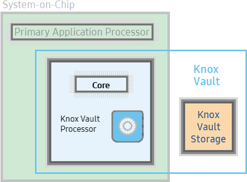

Knox Vault
Last updated March 7th, 2025
Samsung’s Knox Vault is an evolution of the hardware-based security that Samsung has been building within Galaxy smartphones for years. Knox Vault extends upon the protection offered by our TrustZone, the Trusted Execution Environment (TEE) pioneered by Samsung to protect sensitive data such as passwords, biometrics, and cryptographic keys. Whereas the TrustZone runs a different OS alongside Android on the primary application processor, Knox Vault operates completely independently from the primary processor running the Android OS.

As a core component of the Knox security platform, Knox Vault is an isolated, tamper-proof, secure subsystem with its own processor and memory. It also includes an interface to dedicated, non-volatile secure storage, which provides a secure location for storing sensitive data, such as cryptographic keys and credentials. Knox Vault can:
- Store sensitive data such as hardware-backed Android Keystore keys, the Knox Device Health Attestation Key (SAK), biometric data, and blockchain credentials.
- Run security-critical code that authenticates users with increasing timeouts between failures and controls access to keys depending on authentication.
Knox Vault is integrated into select Samsung devices starting from the Galaxy S21, and is comprised of components that are Common Criteria evaluated to the requirements in BSI PP0084 at EAL4+ or higher. These components are tested by an independent lab against a wide array of hardware attacks and through a review of their software and firmware.
Knox Vault provides strong security guarantees against both software and hardware attacks, as it is independent from the primary processor that runs Android. This isolation ensures that code running on the Knox Vault Processor is resistant to attacks that exploit shared resources, such as software side-channel attacks that can compromise other software executing on the same processor. This separation means Knox Vault protects sensitive data even if the primary processor itself is completely compromised.
In addition to being resistant to software attacks, Knox Vault is also designed to be tamper-proof to thwart hardware attacks, which require that an attacker have physical possession of a device to extract secrets. Knox Vault is resistant to hardware attacks such as physical probing, side channels, and fault injection. For details about these attack types, see Protection from Hardware Attacks.
Knox Vault Features
Samsung Weaver
Samsung Weaver is used for secure password authentication to Android. Running on the Knox Vault Processor, Weaver’s data and secrets (passwords) are stored encrypted in the secure Knox Vault Storage. When Weaver receives the secret data to be stored, it also receives a key, and this key must be provided to read the secret data again from Weaver.
To prevent brute-force attempts to extract secrets, Weaver uses a binary exponential back-off algorithm. When attempting to read a secret, if the proper key is not provided, Weaver declines read operations for a time period decided by the back-off algorithm. A non-bypassable secure timer is used to track these time periods.
Credential Storage
This feature securely stores data encrypted by the Knox Vault Processor in the Knox Vault Storage. A secure channel is used to protect data transferred between the Knox Vault Processor and the Knox Vault Storage.
The following data is stored in the Knox Vault Storage:
- Cryptographic keys to protect biometric data
- Blockchain keystore credentials
- Knox Device Health Attestation Key (SAK)
All data in credential storage is encrypted using a Knox Vault-unique key. This prevents the data from being decrypted in other devices.
StrongBox Keymaster Support
The StrongBox Keymaster is a key management module supporting various cryptographic algorithms that can be used by applications to generate keys and perform cryptographic operations with them.
The Android framework provides a KeyStore API for applications to use the StrongBox Keymaster. All keys generated by the StrongBox Keymaster or imported into it are encrypted with the unique key of Knox Vault. Thus, these keys cannot be decrypted outside of the StrongBox Keymaster running on the Knox Vault Processor.
Knox Vault Architecture
Knox Vault is made up of the following:
- Knox Vault Subsystem implemented as part of the System-on-Chip (SoC).
- Knox Vault Storage, an integrated circuit physically outside the SoC.
Through a secure interface, the Knox Vault Subsystem communicates with the Knox Vault Storage.
Knox Vault Subsystem
The Knox Vault Subsystem is designed to operate separately from other SoC components. It has its own secure processing environment consisting of the Knox Vault Processor, SRAM, and ROM. It also provides enhanced security and data protection against various hardware-based attacks, by monitoring the hardware status and its environment using a series of security sensors or detectors including:
- High and low temperature detectors
- High and low supply voltage detectors
- Supply voltage glitch detector
- Laser detector
The Knox Vault Subsystem also includes a dedicated random number generator, and its own Crypto Engine. The Knox Vault Processor can access system DRAM though the External Memory Manager.
Knox Vault Processor
The Knox Vault Processor provides the main computing power for Knox Vault. To provide the strongest isolation, the Knox Vault Processor is separated from the primary processor on the SoC. This separation helps prevent side-channel attacks that depend on malicious software sharing the same execution core as the target software under attack.
By executing the instructions and managing data on SRAM, the Knox Vault Processor also guarantees a physically isolated execution environment. The Knox Vault Subsystem ROM where the secure boot loader code is located is also separated and protected by the hardware protection mechanisms. When the Knox Vault Processor starts, the ROM code is loaded to SRAM. While the ROM code loads the Knox Vault Processor firmware, with the help of the modules running on the SOC main processor, the software stack of Knox Vault Processor has its own secure boot chain.
Hardware Monitor
The Hardware Monitor checks for abnormal hardware status from the security sensors and detectors. The monitoring and detection cannot be affected or bypassed by any application running on Knox Vault Processor.
Crypto Engine
A hardware cryptographic module provides the following cryptographic functions:
- Advanced Encryption Standard (AES) encryption and decryption
- Deterministic random bit generator (DRBG) random number generation
- Secure hashing algorithm (SHA) hashing
- HMAC keyed hashing for message authentication code
- RSA and ECC key generation and services
Knox Vault unique key
The Knox Vault unique key is written into one-time-programmable bits. This unique key is used for protecting keys imported into or generated in the Knox Vault Subsystem. Thus, a key generated in Knox Vault on one device cannot be used outside of that device.
External Memory Manager
The Knox Vault Subsystem can read or write to external memory using the External Memory Manager.
Knox Vault Storage
The Knox Vault Storage is a dedicated, secure, non-volatile memory device that stores sensitive data such as the following:
- Cryptographic keys such as Blockchain keys and Device keys
- Biometric data
- Hashed authentication credentials
Like the Knox Vault Processor, the Knox Vault Storage is designed to prevent various physical and side-channel attacks, using its own secure processor, SRAM, ROM, cryptographic module, and hardware monitor which detects physical tampering.
Secure Core
The Secure Core is the Knox Vault Storage processor used to do the following:
- Execute the ROM code
- Provide cryptographic operations for public key algorithms (RSA, ECC) and SHA algorithms with software libraries
- Safely store data in dedicated SRAM and ROM
Crypto Engine
The Crypto Engine supports symmetric encryption to verify authentication codes after receiving packets from the Knox Vault Processor and also to enhance performance.
Hardware Monitor
As with the Hardware Monitor of the Knox Vault Subsystem, the Hardware Monitor of Knox Vault Storage also detects physical or side-channel attacks related to power, temperature, and electromagnetics. If the Hardware Monitor detects an attack, the Knox Vault Storage is automatically wiped.
Non-volatile memory
The non-volatile memory is a bank of NOR flash used to store data received from the Knox Vault Processor.
Knox Vault intercommunication
The Knox Vault Subsystem and Knox Vault Storage communicate securely over a dedicated I2C (Inter-Integrated Circuit) bus. All traffic on this bus is encrypted and transmitted with an authentication code. Additionally, all communications are protected against replay attacks.
Protection from Attacks
Knox Vault is tested to provide protection against the following classes of hardware probing attacks.
Physical probing
An attacker might physically probe secure hardware to disclose user data or other critical information, while the data is stored in memory or being processed. The attacker directly measures information using electric contact with the secure hardware internals, using techniques commonly employed in Integrated Circuit (IC) failure analysis and IC reverse engineering.
Physical manipulation
An attacker might physically modify the secure hardware to change user data, secure hardware software, or security services or mechanisms. The attacker might make modifications through techniques commonly employed in IC failure analysis and IC reverse engineering. To make these modifications, the attacker identifies hardware security mechanisms, layout characteristics, or software design, including how secure hardware treats user data. Changes of circuitry or data can be permanent or temporary.
Forced information leakage
An attacker might exploit information that is leaked from the secure hardware in order to disclose confidential user data, even if the information leakage is not inherent but caused by the attacker. For example, fault injection or physical manipulation might cause information leakage from signals which normally do not contain significant information about secrets.
Side-channel attack
An attacker might exploit information that is leaked from the secure hardware during its operation to disclose confidential user data. Direct contact with the secure hardware internals is not required. Information leakage might occur through emanations, variations in power consumption, I/O characteristics, clock frequency, or by changes in processing time. One example is the Differential Power Analysis (DPA). This leakage can be interpreted as a covert channel transmission but is more closely related to the measurement of operating parameters. These operating parameters might be derived either from direct measurements or measurements of emanations. The attacker can associate the measurements with the specific operation being performed.
Fault injection
An attacker might cause a malfunction of the secure hardware software by applying environmental stress like light or a power glitch. This attack type could modify the hardware and software functions or deactivate or affect security mechanisms of the secure hardware. Thus, the attacker could disclose or manipulate the user data existing in the secure hardware. For example, the modification of the security hardware function might affect the quality of random numbers provided by the random number generator, and then the software may get constant values or values with low entropy.
On this page
Is this page helpful?